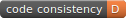
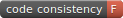
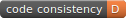
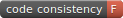

Analysis of Coding Conventions About the reports
An ongoing analysis of coding conventions is being conducted across a range of PHP projects. This document explains how to read the combined and individual project reports that have been produced.
Types of Reports
The analysis of coding conventions produces both a combined report and then an individual project report for each project that has been analysed.
While the reports look similar, the combined report includes features that help find trends and popular coding conventions across a wide range of PHP projects, while the project reports include features to determine how consistently a project applies their preferred coding conventions.
If you are viewing the combined report, you can click the View Project Specific Report link at the top of the page to display a list of all projects that have been analysed. Clicking any of these projects will take you to its individual report page. If you are viewing a project report, an additional View Combined Report link is available to take you back to the combined report. The link also displays the number of PHP projects that have been analysed.
The footer of the report shows the date that it was last generated. Project reports additionally show the Github repository and branch they are generated from, and the commit ID of the last commit that was included in the report.
Coding Conventions
A coding standard is made up of a number of coding conventions, which are a specific method of writing or formatting source code. Even PHP projects that do not follow a formal coding standard may end up adhering to a set of coding conventions due to the influence of the most common contributors or from new contributors changing their style to match that of existing code when submitting patches.
Each report in the analysis is a list of coding conventions. Each coding convention will have 1 or more style variations that a project follows. For example, a coding convention such as Private method prefixed with underscore will have 2 style variations; yes and no. A project may prefer one variation over the other, or may use both. Ideally, each coding convention will have a strongly preferred style variation within a project, indicating a high level of code consistency.
Coding conventions are ordered inside a report based on how consistently they are applied. The coding conventions at the top of the report have the most variation in styles while the ones at the bottom are typically applied consistently 100% of the time.
This method causes the order of coding conventions to differ between the various reports, which can make coding conventions hard to find or compare between projects. To assist, an alphabetical listing of all coding conventions within a report is available in a left-side flyout menu. The menu also provides a quick overview of coding convention consistency and, for project reports, places a blue star next to coding conventions that follow the most commonly used style variation across all analysed PHP projects.
Conventions
Style Variation Graphs
The different style variations that have been found for each coding convention are displayed in a pie graph. The most popular style variation is marked with a star in the graph legend.
For the combined report, each section of the pie graph represents the percentage of all analysed PHP code that conforms to a specific style variation.
For project reports, each section of the pie graph represents the percentage of project code that conforms to a specific style variation.
When viewing the combined report, a second pie graph is displayed within the main one. This inner pie graph shows the percentage of PHP projects that are using each style variation.
If the inner and outer pie graphs do not align, it is likely that a large PHP project is skewing the results. In the example on the left, the winning style variation is used in 50% of all PHP code, but it is the not the preferred variation for most PHP projects. For this reason, it is also important to look at the percentage of projects that prefer each style variation, which is displayed in the graph legend and looks like this:
preferred by 40% of projects
Clicking the link will show a list of the PHP projects that prefer that style variation. Clicking a project in that list will take you to the coding convention on the project's individual report.
When viewing a project report, a flag is shown to the top right of the graph legend. A blue flag with a white star indicates that the project prefers the most commonly used style variation across all analysed PHP projects, while a white flag indicates that the project prefers a different variation.
Trends
The style variations used for each coding convention are tracked over time so that trends can be identified in the data. New data is collected weekly and the results displayed in a line graph at the bottom of each coding convention. Each style variation is plotted on a separate line but uses the same colour as it does in the coding convention pie graphs. Hovering over the graph displays the values at each point in time.
If a large enough swing is detected for a week's data, the point on the line graph will be displayed slightly larger and the events that contributed to the swing will be listed under the graph. In the example above, large swings in the data were seen on the 13th Nov and the 18th Dec.
There are two types of events that can lead to swings in the trend data:
- A project changed their preferred style variation
- A project added or removed lines of code that apply to the coding convention
Code Consistency Grades
Each project is given a grade that indicates how consistently the project's preferred coding conventions are applied throughout the code base. The grades available are A(+/-), B(+/-),
C(+/-), D(+/-) and F. The project's grade is displayed inside a sash at the top right corner of the project report.
On the combined report, the grade indicates how consistent PHP code is across all analysed projects. A high consistency score here indicates that most PHP projects follow the same coding standard.
Clicking on the sash will display the percentage of code consistency across the project as well as instructions for embedding a badge that can display a project's grade and link to the project's report. The badges look like this:


  
 
Using Report Data
The raw data used to generate the reports is stored in a results.json file in the same directly as the index.html file. You are free to download and use this data in whatever way you choose. While it doesn't contain some of the calculated data values such as trend events and grades, it does contain all the current and past raw values for each style variation and coding convention.
The format of the JOSN file for the combined report is an array of metrics (coding conventions). Each metric contains information about the style variations that have been detected, the repositories that prefer each style variation, and the trend values for each date that has been analysed:
{
"Metric name":{
"total":2468,
"total_repos":2,
"values":{
"style1":1234,
"style2":1234
},
"repos":{
"style1":{
"project1":100,
},
"style2":{
"project2":100,
}
},
"trends":{
"YYYY-MM-DD":{
"style1":1234,
"style2":1234
},
...
},
"winner":"style1"
},
...
}
The format of the JOSN file for a project report is similar, but metric data is contained within a metrics array index and an additional project index is added to store the project path and the ID of the last commit analysed. Each metric also contains slightly different data as it is now project-specific:
{
"metrics":{
"Metric name":{
"total":2468,
"values":{
"style1":1234,
"style2":1234
},
"percentages":{
"style1":50,
"style2":50
},
"trends":{
"YYYY-MM-DD":{
"style1":1234,
"style2":1234
},
...
},
"winner":"style1"
},
...
},
"project":{
"path":"projectPath",
"commitid":"commitID"
}
}